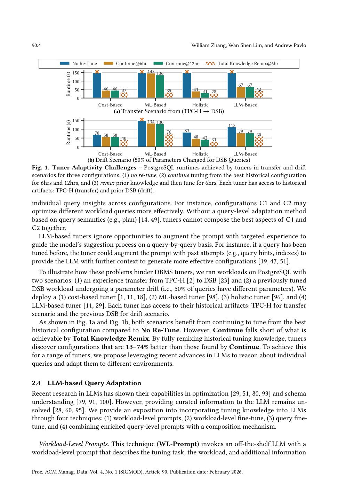
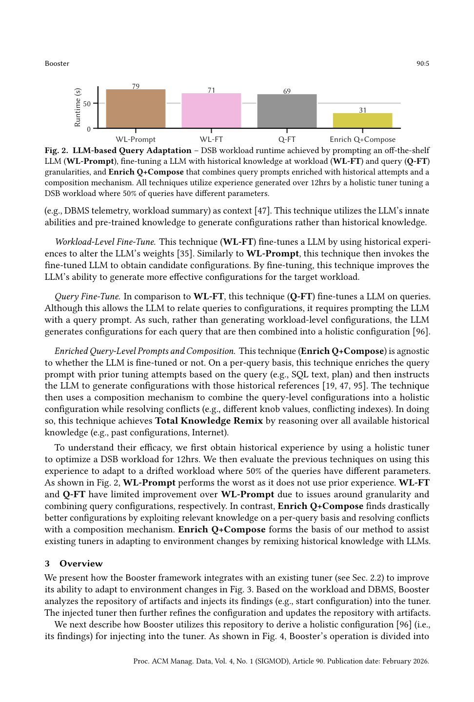
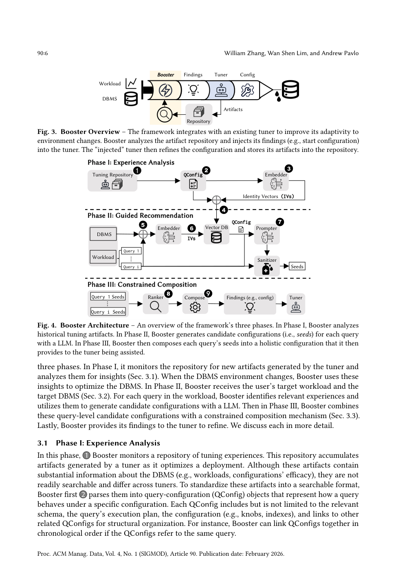
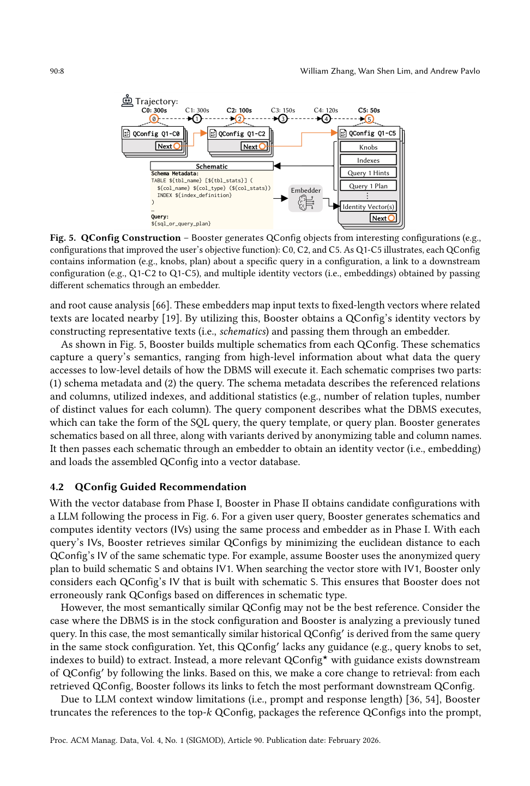
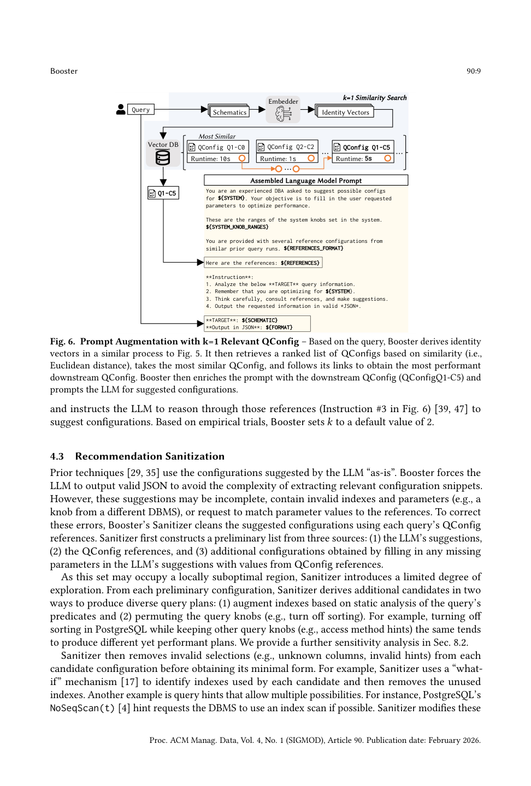
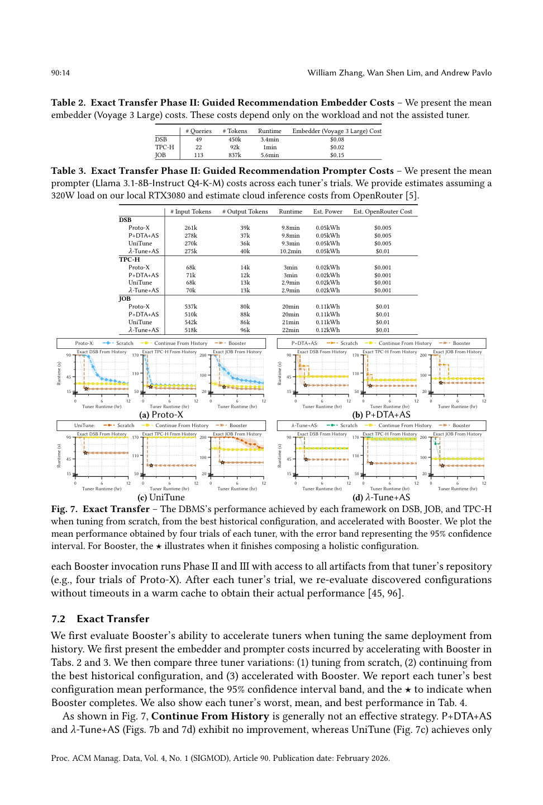
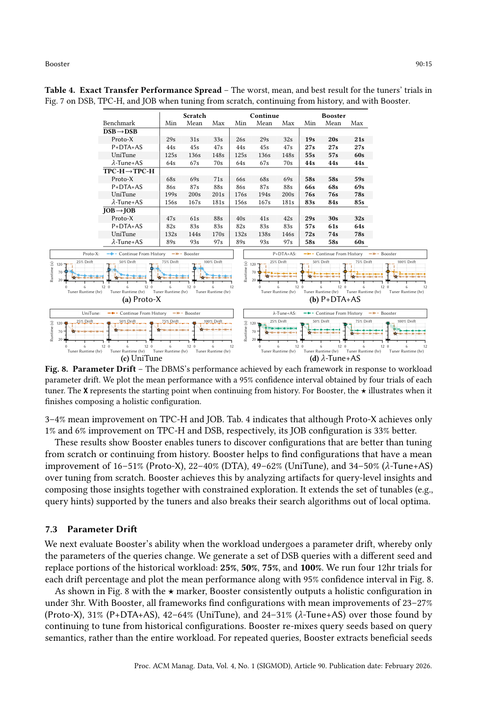
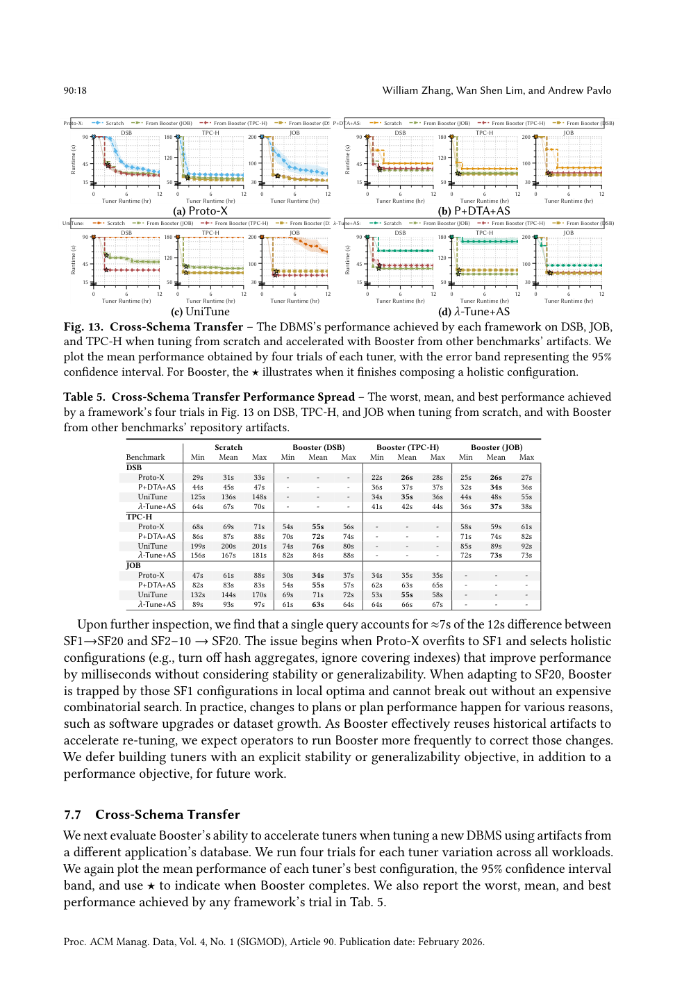
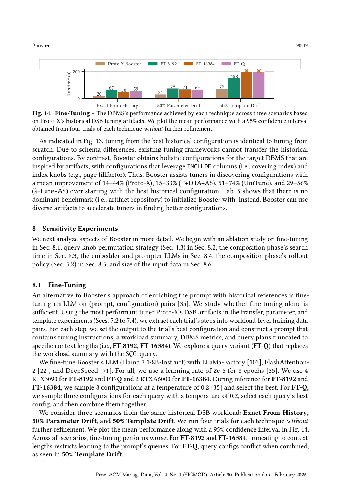

将历史调优产物结构化为查询-配置上下文，用 LLM 按查询给出配置建议，再以束搜索组合为整体配置，加速现有调优器适应环境变化
调优数据库管理系统（DBMS）因存在万亿级可能的配置和不断演化的负载而极具挑战。近期调优进展在优化配置空间上取得突破，但由于其设计以及无法利用查询级历史洞察，现有自动调优器难以在环境变化（如负载漂移、模式迁移）时适应并重新优化。
本文提出 Booster 框架，辅助现有调优器适应环境变化（如漂移、跨模式迁移）。Booster 将历史产物结构化为查询-配置上下文（query-configuration contexts），提示大语言模型（LLM）基于相关上下文为每个查询建议配置，再用束搜索将查询级建议组合为整体配置。在多个 OLAP 负载上，我们评估 Booster 辅助不同前沿调优器（基于代价/机器学习/LLM）适应环境变化的能力。通过组合源自查询级洞察的建议，Booster 帮助调优器发现比"从历史配置继续调优"好至多 74%、且快至多 4.7× 的配置。
为现代数据密集型应用配置 DBMS 日益困难：其一，DBMS 暴露万亿级选项（knob、索引、查询 hint）；其二，应用不断演化（数据访问模式、查询类型、负载强度变化）。自动调优器确保环境变化时配置保持最优。固定负载的调优已被充分研究（启发式、代价搜索、ML、LLM 方法）。然而这些调优器因设计而无法适应环境变化：启发式调优器无法纳入历史知识；ML 调优器在环境变化（如某查询消失）破坏其内部表示时难以为继。这些设计问题使调优器无法有效利用查询级语义（如查询计划）学习历史知识，导致环境变化后重优化更慢、陷入次优配置。
我们提出 Booster 框架辅助现有调优器（代价/ML/LLM 类）适应环境变化：先将历史调优产物组织为结构化洞察；环境变化时，基于每个查询语义获取相关洞察衍生的配置，组合为整体配置并注入调优器进一步精炼。在 PostgreSQL 上的实验表明，Booster 帮助调优器发现比"从历史继续调优"性能高至多 74%、时间少至多 4.7× 的配置。
自主驾驶 DBMS 在无人干预下自我优化，部署调优器寻找封装所有可调方面的整体配置（holistic configuration）（如系统 knob、索引、每查询 hint）。调优器分三类：(1) 启发式与代价驱动（固定算法 + what-if 代价引导）；(2) ML 与整体调优器（内部模型试错，将负载/模式表示为模型中的位）；(3) LLM 调优器（现成模型如 GPT-4o 或基于历史微调，采样多配置取最优）。
调优器适应性。 适应性反映复用过往经验的能力，分两类：迁移场景（Transfer）——将经验从过往部署迁移到未见部署（模式可相同或不同）；漂移场景（Drift）——部署特性随时间变化（查询参数、模板、负载量、硬件、底层数据），Redshift 观测到 50% 生产集群每日 50% 查询逐字重复。
适应性挑战。 (1) 刚性与脆弱性：代价驱动调优器缺乏将先验洞察用于引导搜索的机制；ML 调优器在内部表示因环境变化时必须重优化，预训练因目标环境差异与重评估开销而不可行。(2) 负载粒度：现有调优器在负载粒度适应，无法组合不同查询的最佳方面（C1、C2 各优化不同查询）。LLM 调优器也忽略了用针对性经验逐查询增强提示的机会。图 1 显示：相比"不重调"，"从历史最佳继续调优"有改善，但仍远不及"完全重混历史知识（Total Knowledge Remix）"——后者发现比 Continue 好 13–74% 的配置。

LLM 查询级适应。 我们探讨将调优知识纳入 LLM 的四种技术：(1) 负载级提示（WL-Prompt）；(2) 负载级微调（WL-FT）；(3) 查询级微调（Q-FT）；(4) 富集查询级提示 + 组合（Enrich Q+Compose）。图 2 显示：WL-Prompt 最差（不用历史）；WL-FT、Q-FT 改进有限；Enrich Q+Compose 通过逐查询利用相关历史并解决冲突，找到显著更好的配置——这正是 Booster 方法的基础。

Booster 与现有调优器集成（图 3）：分析产物仓库并将其发现（如起始配置）注入调优器；被注入的调优器进一步精炼配置并更新仓库。Booster 运作分三阶段（图 4）：Phase I 经验分析、Phase II 引导推荐、Phase III 约束组合。

Phase I 经验分析。 监控产物仓库，将产物解析为 QConfig 对象（表示某配置下查询的行为，含模式、执行计划、配置、与其他 QConfig 的链接）；再用 embedder 生成固定长度身份向量（identity vectors）并载入向量数据库。
Phase II 引导推荐。 收到目标负载与离线环境后，为每个查询获取相关 DBMS 信息、生成身份向量、从向量库检索相关历史 QConfig、组合进提示并调用 LLM 建议配置；经 Sanitizer 清洗得到可部署的每查询种子。
Phase III 约束组合。 先用排序，再用束搜索（best-first search 变体）识别高性能整体配置，终止条件为时间耗尽。
Phase I 挖掘产物仓库中的"有趣配置"（改善目标函数的），为每个查询构建 QConfig（图 5），含 DBMS 配置（knob、索引）与查询信息（SQL、计划），并链接到轨迹中下一配置。由于向量相似搜索需要定长向量，Booster 从每个 QConfig 构建多个 schematic（模式元数据 + 查询，可匿名化表列名），分别过 embedder 得到多个身份向量。

Phase II 用与 Phase I 相同的 embedder 生成查询身份向量，按欧氏距离最小化检索相似 QConfig（仅同 schematic 类型比较）。关键改进：从检索到的 QConfig 沿链接获取性能最佳的下游 QConfig（最语义相似的未必最有指导价值）。受上下文窗口限制，截断到 top-$k$（默认 $k=2$）并组装进提示（图 6），让 LLM 参考历史建议配置。

Booster 强制 LLM 输出合法 JSON，但建议可能不完整或含非法项。Sanitizer 从三源构建初步列表（LLM 建议、QConfig 参考、补全缺失参数），并引入有限探索（基于谓词静态分析增索引、置换查询 knob 如关闭排序）产生多样计划；最后移除非法选择（未知列、非法 hint），用 what-if 机制识别并删除未用索引，保留产生唯一计划的所有配置作为种子。
种子性能各异，排序至关重要。Booster 不依赖计划代价（与质量未必相关）也不依赖需大量数据的学习代价模型，而是实际执行每个种子估计质量（用可覆盖原索引的替代索引上界运行时间），并按计划代价递增顺序执行，辅以每查询超时。
受基于松弛的物理设计启发，Booster 贪心构造初始配置后用束搜索精炼（算法 1，运行至时间预算耗尽）：取每查询最佳种子 → Merge 为整体候选 → Evaluate → Select 待精炼查询 → Rollout 替代种子 → 重复。Merge 对系统 knob 取最小/中位/最大，物理结构取并集去重；Select 先修合并冲突（退化查询），再贪心选最高运行时间查询；Rollout 用 M1–M4 机制生成替代种子：
Booster 采用 5 步 Rollout（Local、25%/50%/75%/100% Seed）控制评估数量。
Booster 与调优器无关，开发者通过 API 命令接入：(1) Parse 解析产物提取洞察；(2) Link 链接 QConfig（默认按轨迹时间顺序）；(3) Digest 将最佳整体配置传给调优器进一步精炼。部署时操作员须提供离线环境与 embedder/prompter LLM 的 API 或本地 GPU，并负责判断何时调用 Booster。
目标 PostgreSQL v15.1（32GB RAM、20 worker），三个 OLAP 负载：JOB（6.7GB）、TPC-H SF10（14.3GB）、DSB SF10（22.5GB）。四种前沿调优器：P+DTA+AS（PGTune+DTA+AutoSteer）、UniTune（阿里协调调优）、Proto-X（CMU 整体调优）、$\lambda$-Tune+AS（LLM 调优 + AutoSteer）。Booster 用 Voyage 3 Large 作 embedder、Llama 3.1-8B-Instruct 作 prompter，Phase III 组合 1.5 小时。
比较三种变体：(1) 从头调优；(2) 从历史最佳继续；(3) Booster 加速。图 7 显示 Continue 通常无效（P+DTA+AS、$\lambda$-Tune+AS 无改进，UniTune 仅 3–4% 均值改进），而 Booster 使配置比从头调优好 16–51%（Proto-X）、22–40%（DTA）、49–62%（UniTune）、34–50%（$\lambda$-Tune+AS）。

用不同随机种子替换历史负载的 25%/50%/75%/100% 查询。图 8 显示 Booster 总在 3 小时内输出整体配置，比继续调优好 23–27%（Proto-X）、31%（P+DTA+AS）、42–64%（UniTune）、24–31%（$\lambda$-Tune+AS），且快至多 3.6×。Booster 基于查询语义重混种子，对重复查询从同模板历史种子泛化。

模板漂移（图 9）下 Booster 改进 12–30%（Proto-X）、24%（P+DTA+AS）、52–63%（UniTune）、26–39%（$\lambda$-Tune+AS），快至多 4.7×。机器迁移（图 10）改进 31–32%（Proto-X）、61–62%（UniTune）。数据增长（图 11–12）下 UniTune 改进 53–63%，Proto-X 较温和（6–29%）。跨模式迁移（图 13，用其他基准产物加速）改进 14–44%（Proto-X）、15–33%（P+DTA+AS）、51–74%（UniTune）、29–56%（$\lambda$-Tune+AS），且无单一主导基准作初始化。

8.1 微调（Fine-Tuning）。 图 14 对比"提示富集历史"与"微调 LLM"：跨所有场景微调更差（截断限制学习、查询配置组合冲突）。8.2 查询 knob 置换策略（None/Join/Access/Sort/All）：漂移场景下 All 策略最佳。8.3 搜索时间（0.5–6h）：时间越长配置越好但收益递减，1.5h 后精确迁移趋稳。8.4 Embedder-Prompter 模型（图 17）：目标负载与历史差异越大，模型选择越重要；更强 prompter（o3-mini）在跨模式场景好 32%，但推理成本更高。8.5 Rollout 策略（图 18）：All（M1–M4 全用）最优。8.6 输入数据（图 19）：多产物（4-Input）通常优于单产物，但 $\lambda$-Tune+AS 单产物因引用更多样模板反而更好。

相关工作涵盖预测（forecast）、行为建模、调优框架、表示学习、自然语言调试与学习组件等方向，Booster 可与之结合（如用其表示选择相关历史经验）。
结论。 尽管调优器寻找高性能配置的能力进步，现有调优器因设计仍无法适应环境变化（负载漂移、跨模式迁移）。为此我们提出 Booster 框架，利用历史中的查询级洞察辅助调优器适应：将历史产物结构化为洞察，用 LLM 基于相关经验给出查询级配置，再用束搜索组合为整体配置。在 PostgreSQL OLAP 负载上，Booster 辅助前沿代价/ML/LLM 调优器适应环境变化，相比"从历史继续调优"，帮助发现性能高至多 74%、且快至多 4.7× 的配置。